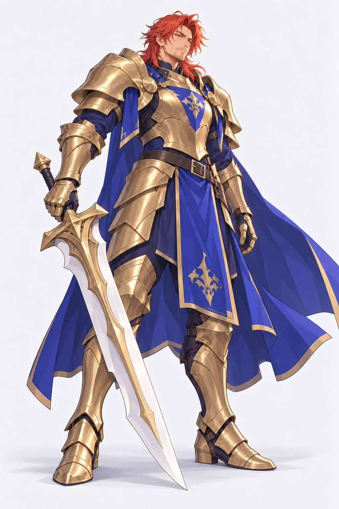
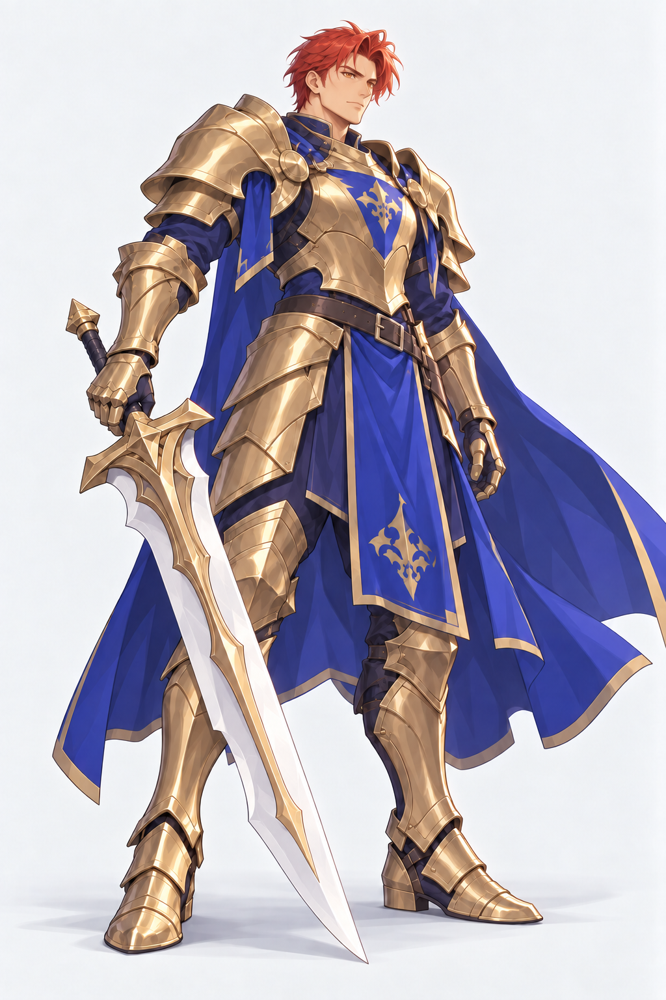

<!doctype html><html lang="zh-CN"><meta charset="utf-8"><meta name="viewport" content="width=device-width, initial-scale=1"><title>山岳旗手 · 男性立绘优化</title><style>body{margin:0;background:#e8e5df;color:#292723;font:15px/1.6 -apple-system,BlinkMacSystemFont,"PingFang SC",sans-serif}main{max-width:1300px;margin:auto;padding:16px 24px}h1{font-size:23px;margin:0 0 8px}.pair{display:grid;grid-template-columns:1fr 1fr;gap:18px}figure{margin:0;background:#f6f5f2;border:1px solid #cbc6bc;border-radius:8px;overflow:hidden}figcaption{padding:8px 12px}img{display:block;width:100%;height:calc(100vh - 160px);object-fit:contain}a{color:#414f71}p{margin:8px 0}nav{float:right}@media(max-width:650px){main{padding:10px}.pair{gap:8px}img{height:auto}nav{float:none}}</style><main><nav><a href="after-face-v2.png">优化稿大图</a> · <a href="face-hair-prompt.txt">完整提示词</a></nav><h1>山岳旗手 · 男性立绘优化</h1><div class="pair"><figure><figcaption>上一版：脸与发型待修</figcaption><a href="after.png"></a></figure><figure><figcaption>脸与短发修订稿</figcaption><a href="after-face-v2.png"></a></figure></div><p>重做青年骑士的脸型、神情与短发；盔甲、武器和姿势延续。尚未替换游戏素材。</p></main></html>